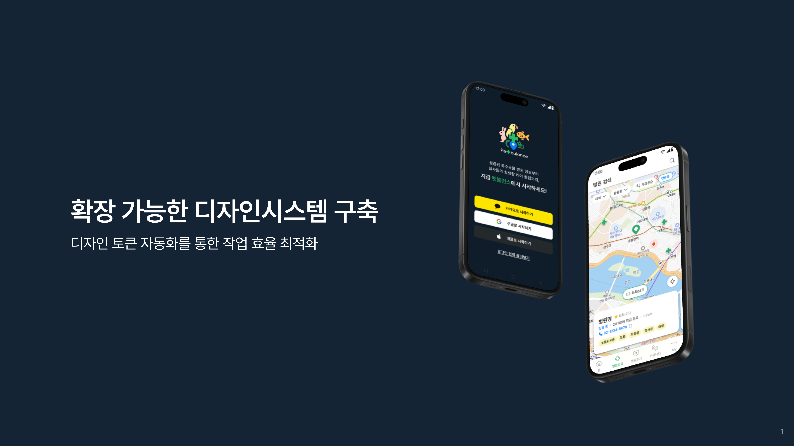

펫뷸런스
반려동물 응급 이송 서비스를 위한 디자인 연구

개요
펫뷸런스는 반려동물 응급 상황 발생 시, 빠르고 안전하게 동물을 병원으로 이송하는 서비스를 제공합니다. 본 프로젝트는 사용자 경험 개선을 위한 디자인 리서치 및 프로토타입 제작을 목표로 합니다.
Role
문제 정의 및 분석
사용자 리서치
솔루션 도출
디자인 시스템 구축
스크린 디자인 제작
프로토타입 제작
Duration
개인 작업 : [시작일] - [종료일]
Tools
Figma
Notion
Github
Discord
문제 정의
반려동물 응급 상황 발생 시, 보호자들이 겪는 어려움과 문제점을 정의합니다.
솔루션
정의된 문제를 해결하기 위한 솔루션을 제시합니다.
프로세스
프로젝트 진행 과정에 대한 설명입니다.
자세한 내용은 이미지 참고:


디자인
주요 스크린 디자인 및 UI/UX 요소에 대한 설명입니다.


프로토타입
주요 기능에 대한 프로토타입 설명입니다.

결과
프로젝트를 통해 달성한 주요 성과 및 결과입니다.

Learnings
프로젝트를 통해 얻은 교훈과 향후 개선 방향에 대한 내용입니다.